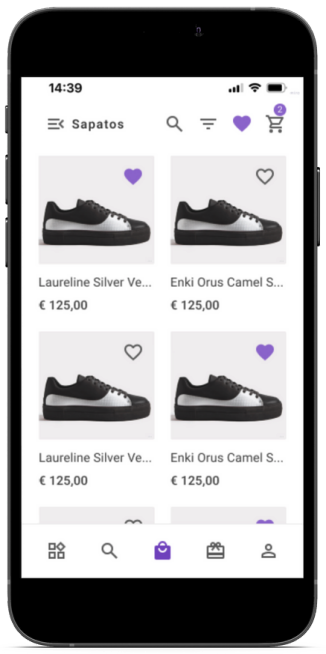
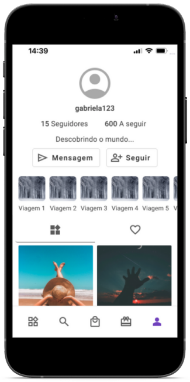

Redesign APP
Redesign de Aplicação Portuguesa
Realizei um primeiro redesign de algumas telas da aplicação ChatnGift com base em princípios e teorias de UX Design e de Psicologia aplicada ao Design, tendo em vista que as telas não tinham sido criadas a partir de estudos de UX. O intuito era criar protótipo de um design mais moderno e posteriormente prosseguir com as pesquisas com os usuários. Ler Mais
